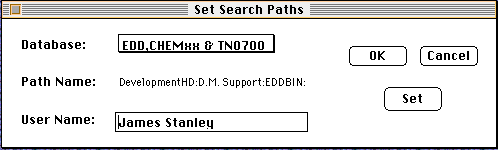
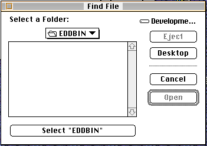

Distributed By: Virtual Labs
Search Paths Dialog Box
PATH...File Menu:Search Paths
The last remaining set of dialog boxes which are activated from the File
Menu is the set of dialog boxes and the window and table objects which are
selected using the hierarchical menus under the New menu item. These dialog
boxes are covered under the menus which are activated in the new window.

Search Paths Dialog Box
The Search Paths Dialog box is used to specify the storage and retrieval
locations for the data and documents supported or utilized by Desktop Microscopist.
In order to keep the data types separate while simultaneously allowing access
to write protected media (such as CD ROMs), five search paths are defined,
they are:
EDD, CHEMxx &TN700:
This is the primary search location for the Electron Diffraction Database.
It is used when matching up experimental data to the EDD.
EDD, CODENS:
This path is used to indicate the location of the CODENS file. This file
is used in the search / match functions and is also accessed by the bibliographic
data module of the crystal definition function.
Desktop Crystals:
This is the default search path for the storage and retrieval of Desktop
Microscopist crystals. Modification of this path provides an easy method
for the support of multiple personal crystal libraries within a work group.
This is also the location which will be searched from the search / match
routines when the Desktop Crystals item is checked.
Phase Diagrams:
This is the location of the Phase Diagrams file, or in future versions the
active Phase Diagram library.
Desktop Docs:
This is the default location for the storage and retrieval of Desktop Microscopist
documents.
The text to the right of the Set buttons is the ASCII representation of
the particular search path. To modify the search path, click on the set
path and then use the standard file interface to navigate to the desired
location on disk. Once this has been accomplished press Save and the new
path will have been entered. The directories are stored as alias records
and are automatically updated whenever the program is run. As a result,
once a directory has been identified as the target for a search path, that
path should remain intact, even if the directory is moved.
Once all of the necessary paths have been specified, clicking OK causes
them to be activated.
Users connected to a network should be aware that an attempt will be made
to locate the specified storage device even if it is no longer connected
to the network. If the device cannot be found a dialog requesting the device
will appear. If this occurs, either mount the device or simply ignore the
dialog and continue as described above.

Author: J.ames
T. Stanley
 Desktop
Manual:Dialog Boxes
Desktop
Manual:Dialog Boxes
Distributed By: Virtual Labs
Last Updated:1/12/96 Sat, Apr 27, 1996